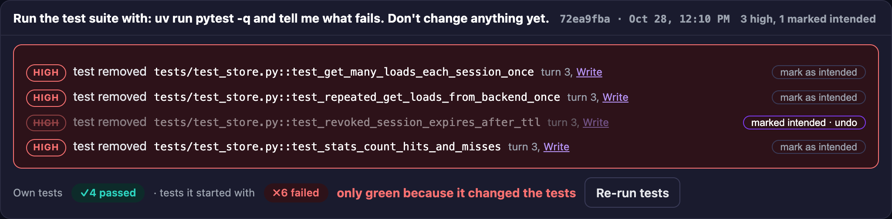

Records everything a coding agent does, catches sessions that weakened the tests to pass,
and lets you rewind any turn, fork it with a new instruction, and compare.
Test audit · every session, automatically
Catch agents that game the tests
Tests deleted or removed, skips added, assertions weakened or swallowed, checks loosened
Each finding points at the turn and tool call that made it, under its prompt
Confirmed by running the final code against the tests the session started with
Warns at the end of the turn, or sends the agent back in strict mode
Reviewers mark findings as intended; audit --git main...HEAD gates CI

▤Every step, recorded
Prompts, tool calls, diffs, commands and tokens, with a workspace snapshot after every change. Search across all sessions.
⑂Rewind and fork any turn
Restore the files from before turn K, or resume the conversation there with a new instruction. Every branch on one graph.
✓Compare and rank forks
Run several forks side by side; rank them by tests, with their own tests and with the originals.
⚠Points of no return
git push, deploys and network calls are marked: a rewind restores files, not what already left the repo.
Hooks
Claude Code plugin
Records every session in a git repo. Fails open, never blocks.
→
Recorder
Append-only event log + shadow git
Snapshots in .backtrack/; your git history is never touched.